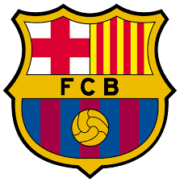

FC Barcelona is een voetbalclub uit Barcelona, Catalonië.
De club behoort tot de Europese wereldtop en is met zijn 95 trofeeën de meest succesvolle voetbalclub in Spanje.
De clubkleuren zijn paars-blauw en het stadion van FC Barcelona is Camp Nou of Nou Camp, dat letterlijk 'nieuw veld' betekent.
Op de UEFA-ranglijst van beste clubs in Europa staat FC Barcelona met 138.000 punten op de 2e plaats.
Aartsrivaal van FC Barcelona is Real Madrid. Wedstrijden tussen beide clubs staan bekend als El Clásico.
Voor de Catalaanse bevolking werd in de jaren van het strenge regime van Franco de club het absolute symbool van hun eigen identiteit en drang naar onafhankelijkheid.
In de laatste zeven jaar werd Barcelona vijf maal kampioen in de Primera División en in zowel 2009, 2011 als 2015 won het de Champions League.
In 2009 slaagde het er als enige Spaanse club ooit in om de treble te winnen (landskampioenschap, nationale beker en Champions League), een huzarenstukje dat in 2015 werd overgedaan en dat geen enkele Europese club twee keer leverde.
De top 5 beste spelers die bij Fc Barcelona hebben gespeeld worden als volgt genummerd

- Messi
- Cruyff
- Ronaldinho>
- Iniesta
- Xavi